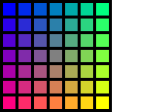
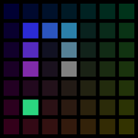

Soutěž v programování – 32. ročník
Krajské kolo 2017/2018
max. 40 bodů
V této úloze je zakázáno používat předem připravené rastrové obrázky. Významné zjednodušení řešení (tj. pouhé zobrazení obrázku) znamená ohodnocení úlohy 0 body.
Po otevření stránky zobrazte mřížku z čtverečků jako na obrázku. Pro plný počet bodů by mřížka měla mít rozměry 7×7 políček. Mřížka je vždy umístěna uprostřed obrazovky (jak horizontálně, tak vertikálně).
Pozadí stránky je černé. Rozměr čtverečku je 40 px, mezi čtverečky je 10 px mezera. Barva čtverečků je určena jejich pozicí. Každá složka (červená, modrá, zelená) je určena svým vlastním pravidlem:
Pro kontrolu: prostřední pole je šedé, #808080.
Vytvořte na stránce, vpravo od herního pole, vertikálně uprostřed stránky, ovládací panel podle obrázku:
Šipka je Unicode znak s hexadecimálním kódem 27a4. Tlačítka mají šedý zaoblený okraj, černou šipku a
bílé pozadí.
V dalších odstavcích budeme mluvit o různých stavech políčka. Je-li políčko rozsvícené, má barvu přidělenou popsanými pravidly. Pokud je políčko zhasnuté, každá ze složek jeho barvy je 20 % původní hodnoty. Pokud je inverzní, má všechny složky barev převrácené, tedy například z modré se stane žlutá.
Mřížka reprezentuje herní pole hry Had. Políčka zabraná hadem jsou rozsvícená. Políčka, na kterých se vyskytuje jídlo, jsou inverzní. Ostatní políčka jsou zhasnutá.
Nebudete-li programovat dynamickou část, upravte mřížku, aby vypadala jako na obrázku:
V našem příkladě je had dlouhý sedm políček (fialová až šedá), jídlo se nachází na pastelově zeleném políčku.
Kliknutím na zhasnuté políčko se na jeho místě objeví jídlo. Kliknutím na jídlo se na tomto políčku jídlo zruší. Klikání na hada nemá žádný efekt.
Naprogramujte pohyb hada pomocí šipek ovládacího panelu. Na začátku had stojí uprostřed plochy. Při najetí myší na šipku had změní směr. Šipka změní okraj a barvu na červenou a hlava hada se začne pohybovat daným směrem. Had se pohne o jedno políčko každou půlsekundu. Šipka zůstává červená, dokud se had pohybuje daným směrem.
Pokud by měl had vyjet z herní plochy, objeví se na protilehlé straně.
Na začátku hry je had 3 políčka dlouhý, ale je svinut na prostředním políčku. Až když se začne hýbat, vysune se do své plné délky.
Pokud se hlava hada přesune na políčko s jídlem, had se v tu chvíli prodlouží o jedno pole (v tomto časovém kroku se neposune ocas hada). Jídlo je hadem snědeno, z herního plánu tedy mizí.
Pokud by had narazil hlavou do sebe sama, hra končí. Zobrazte zprávu o ukončení hry. Pozor na to, že had se hýbe celý najednou. Například pokud je had dlouhý 7 políček, může bez zásahu uživatele procházet stěnou a kroužit dokola, aniž by si ukousnul ocas.
Had nemůže „couvat“, neboli si ukousnout políčko těsně za hlavou. Najetí na šipku takového směru prostě ignorujte.
Během hry počítejte skóre (počet snědených jídel) a viditelně ho zobrazte. Zobrazte ho také ve zprávě o ukončení hry. Nabídněte restart hry.
S každým snědeným jídlem zkraťte časový krok o 0.01 sekundy. Nemusíte řešit okrajový případ.
Umožněte uživateli zvolit si parametry hry pomocí parametrů požadavku v URL. Zohledněte následující parametry (výchozí hodnoty v závorkách):
width: šířka pole (7)
height: výška pole (7)
length: počáteční délka hada (3)
timestep: počáteční čas na jedno kolo v milisekundách (500)
timedelta: úbytek času na bod skóre v milisekundách (viz níže)
Není-li uveden úbytek času explicitně, dopočítá se vzorcem timestep / (width * height). Nemusíte kontrolovat smysluplnost parametrů, předpokládejte, že jsou vždy rozumné.
Například kdybychom chtěli hrát těžkou hru na mřížce 30×15:
had.html?width=30&height=15×tep=300&timedelta=5
Pokud soutěžící nenaprogramoval dynamickou část, ověřte, že mřížka není jen předpřipravený rastrový obrázek (zdrojový kód stránky bude podezřele krátký, debugger nebude ukazovat jednotlivé čtverečky jako elementy). Pozor, použití SVG (ať už přímo jako součást HTML, nebo externě načteného), podobně jako kreslení na canvas z JavaScriptu, je v pořádku.
V hodnocení se používá výraz "umí". Pokud soutěžící implementoval dynamickou část, hodnoťte podle toho, jestli jste schopni takovou situaci vyvolat. Pokud soutěžící implementoval pouze statickou část, hodnoťte podle toho, co vidíte – pokud nelze ověřit, body neudělujte.
Pokud soutěžící umí změnit velikost mřížky pomocí parametrů, ověřujte funkčnost stylování obecně (tj. např. strhněte body za vzhled, pokud zobrazení jiného rozměru tabulky rozbije vzhled). Naproti tomu body za přijetí parametrů v takovém případě udělte zcela. Vyhněte se okrajovým situacím, kdy se mřížka na obrazovku nemůže vejít, zadávejte pouze rozumné hodnoty parametrů.
| Body | Za co |
|---|---|
| 1 | Stránka projde validátorem HTML na validator.w3.org. |
| 1 | Stránka projde validátorem CSS na jigsaw.w3.org/css-validator. |
| 1 | Javascript nevypisuje do konzole žádné chyby (pouze pokud je zapojen do řešení úlohy). |
| 1 | Zobrazí se mřížka horizontálně zarovnaná na střed. |
| 1 | Mřížka je vertikálně zarovnána na střed. |
| 1 | Mřížka zůstává uprostřed i při změně velikosti obrazovky. |
| 1 | Políčka mřížky jsou čtverečky velké 40 px. |
| 1 | Mřížka obsahuje 7×7 políček. |
| 1 | Mezi políčky je 10 px mezera. |
| 1 | Políčka mřížky mají různou barvu. Každé políčko je jednobarevné (= celá mřížka není jen souvislý přechod). |
| 1 | Odstín políček odpovídá zadání (pozor na to, že může být zobrazena herní situace, ověřujte pouze rozsvícená a zhasnutá políčka, příp. inverzi invertovaných). |
| 1 | Mezery mezi políčky jsou vždy černé (neprosvítá barva). |
| 1 | Stránka umí zobrazit rozsvícená políčka. |
| 1 | Stránka umí zobrazit zhasnutá políčka. |
| 1 | Stránka umí zobrazit invertovaná políčka. |
| 1 | Stránka obsahuje ovládací panel, vzhled odpovídá zadání. |
| 1 | Ovládací panel je vpravo od mřížky, uprostřed stránky. |
| 1 | Šipka, nad kterou byla naposledy myš, je červená. |
| 1 | Klikáním lze přepínat mezi rozsvíceným a zhasnutým políčkem. |
| 1 | Had se umí pohybovat (rozsvěcí se hlava, zhasíná ocas). |
| 1 | Klikání na pohybujícího se hada nemá žádný efekt (ani po tom, co had odjede). |
| 1 | Had se pohybuje směrem podle poslední šipky. |
| 1 | Ovládání je "přirozené", nemá zpoždění, umožňuje přepnout směr vícekrát během jednoho kroku. |
| 1 | Had se pohybuje cca jednou za půl sekundy. |
| 1 | Had zabírá na začátku jen 1 pole, vysune se až při pohybu. |
| 1 | Had se pohybuje na toru (protilehlé hranice pole jsou "spojené"). |
| 1 | Nelze změnit směr na opačný od současného (ověřte i rychlé přepnutí přes jiný směr, nesmí se rozbít). |
| 1 | Snědení jídla prodlouží hada a zmizí jídlo. |
| 1 | V okamžiku snědení jídla se nepohne ocas. |
| 1 | Pohyb hada se zrychluje s přibývající délkou. |
| 1 | Je zobrazeno skóre (počet snědených jídel) v průběhu a po konci hry. |
| 1 | Hra končí, když had narazí sám do sebe. |
| 1 | Had si nesní ocas (ověřte hadem délky 7 jezdícím "dokola"). |
| 1 | Po skončení hry je nabízen restart (funkční). |
| 1 | Velikost plochy jde určit parametry width a height.
|
| 1 | Počáteční délka hada jde určit parametrem length.
|
| 1 | Rychlost pohybu jde určit parametrem timestep (ověřte vysokou hodnotou).
|
| 1 | Obtížnost hry jde určit parametrem timedelta (zkuste např. 200 ms)
|
| 1 | Není-li timedelta uvedena, dopočítává se (zkuste vysokou hodnotou timestep a malou mřížkou).
|
| 1 | Parametrizace se nerozbije zadáním neexistujícího parametru (ověřte např. foo-width=30, nesmí se projevit)
|
max. 20 bodů
Právě jste se z čista jasna ocitli s Felisem na vesmírné lodi. Bohužel ani jeden neumíte vesmírnou loď řídit a kolem vás je blížící se meteorit, dále spousta světelných let vesmíru a ještě také několik desítek příruček k raketě. Záchranou by mohlo být pouze to, kdyby se vám podařilo včas najít správnou příručku s informacemi podstatnými pro vychýlení směru vesmírné lodi a vyhnout se tak jinak téměř jisté srážce s meteoritem.
Vytvořte aplikaci, která vám bude poskytovat grafické rozhraní s funkcí vyhledávání ve zdrojích specifikovaných v přiloženém souboru.
Přiložený soubor obsahuje seznam knih, které máte k dispozici a bude úkolem je zobrazit. Se souborem můžete dělat co uznáte za vhodné.
knihovnicka.
article.
details obsahuje element summary obsahující název knihy.
var a jejich název je určen atributem data-type.
details obsahuje ještě element figure, ve kterém je vložen obrázek.
vyhledavani/data.xml.
<?xml version="1.0" encoding="UTF-8"?>
<knihovnicka>
<article>
<figure>
<img src="http://ecx.images-amazon.com/images/I/41kSLEoswsL.jpg"
alt="044310073X.jpg image" width="304" height="228"/>
<figcaption>044310073X.jpg image</figcaption>
</figure>
<details>
<summary>Oral and Maxillofacial Surgery: An Objective-Based
Textbook, 2e</summary>
<var data-type="indexId">044310073X</var>
<var data-type="author"></var>
<var data-type="categoryId">16</var>
<var data-type="category">Medical Books</var>
</details>
</article>
</knihovnicka>
| Body | Za co |
|---|---|
| 1 | Stránka je validní |
| 0,5 | Rozvržení odpovídá zadání (záhlaví, hlavní část, zápatí, obsahuje všechny prvky) |
| 0,5 | Při prvním načtení jsou zobrazeny knihy ze souboru |
| 1 | Knihy jsou zobrazeny ve 3 sloupcích |
| 1 | Jsou zobrazeny pouze názvy knih |
| 1 | Na název knihy lze kliknout a zobrazit podrobnosti |
| 1 | V levé polovině jsou zobrazené textové informace - zobrazuje se pouze autor a kategorie, v pravé polovině obrázek. |
| 1 | Rozkliknutá kniha se zobrazí přes celou šířku |
| 1 | Při rozkliknutí knihy se názvy ostatních knih zobrazují nad a pod detaily rozkliknuté knihy |
| 0,5 | Zápatí a záhlaví má stejnou výšku |
| 0,5 | Zápatí a záhlaví je zobrazeno i při skrolování |
| 1 | Knihy jsou zobrazeny podle abecedy |
| 2 | Funguje vyhledávání |
| 1,5 | Vyhledává i ve vybraných položkách (Autor, Název, Kategorie) |
| 1,5 | Funguje i vyhledávání podle regulárních výrazů |
| 0,5 | Vyhledávání podle regulárních výrazů funguje pouze při zaškrtnutém políčku v záhlaví |
| 2 | Při vyhledání "Classic" (pro název knihy) je zobrazena prioritně kniha začínající na "Classic" a po ní kniha obsahující "Classics" |
| 0,5 | Vyhledávání funguje po stisku vyhledávacího tlačítka (pokud je splněn následující bod, tak je splněn i tento) |
| 1 | Vyhledávání je dynamické - výsledky jsou zobrazovány i v průběhu psaní dotazu |
| 0,5 | Je zobrazen počet knih |
| 0,5 | Je aktualizován správně počet nalezených knih (v zápatí) |
max. 30 bodů (10 grafická část, 20 funkční část)
Pejsek s kočičkou se rozhodli si zase něco vyrobit. Protože pejsek měl rád dopravní prostředky a kočička Javascript, tak si v Javascriptu napsali simulátor dopravních prostředků. Má ale nějaké mouchy, kočičku už to přestalo bavit a pejsek si to spravit neumí, tak by potřeboval pomoc.
Součástí zadání je aplikace, spustíte jí otevřením souboru index.html. Nahoře je „ovládací panel“, kde můžete
ovládat rychlost simulace, resetovat jí a hlavně nahrát soubor (JSON, formát je
popsaný níže). Testovací soubory najdete v stejné
složce, je tam jednoduchý test1.json, a komplexnější test2.json (sice vám může připadat povědomý, ale je to dost zjednodušené,
tak si podle toho neplánujte cestu domů).
Aplikace je napsaná v Typescriptu, což je jazyk transpilovaný do Javascriptu; přidává
téměř jenom typovou kontrolu (aby
tam nebyly hloupé chyby). Navíc aplikace používá některé nové konstrukce Javascriptu
(ES6), tak se nelekněte. Pro případ, že by vám to nevyhovovalo,
nebo byste se jenom chtěli podívat, do čeho se určitá konstrukce kompiluje, máte
vedle souboru
script.ts také
script.js (ES6) a
script.es5.js (ES5, "starý Javascript"), které jsou ekvivalentní (je to výstup Typescriptového
kompilátoru).
I pokud nechcete upravovat Typescriptovou verzi, může vám trochu pomoci se podívat
na definice typů, se kterými aplikace pracuje – jsou všechny hned nahoře a jsou u nich
komentáře.
Chyby stačí opravit jenom v jednom z nich, ale aplikace musí používat ten opravený,
aby fungovala (takže pokud si vyberete, že opravíte Typescript, musíte ho zkompilovat
do Javascriptu, aby to browser pochopil). Opravený výsledek včetně všech dalších potřebných
souborů uložte do adresáře s názvem úlohy stejně jako u ostatních úloh.
Data aplikace jsou v JSONu a kromě toho, že jsou data v tomto formátu uložená, tak
s ekvivalentním modelem simulátor interně
pracuje – uložený soubor je v podstatě jenom serializovaný objekt typu
SimulationData. Struktura vypadá nějak takto:
map – Mapa světa, ve kterém se pohybuje
nodes – pole bodů v mapě (vrcholy, tj. křižovatky)
pos – souřadnice bodu
[x, y]
connections – propojení mezi body (hrany, tj. silnice/koleje)
from,
to – mezi jakými body vede (číslo je index v poli
nodes). Cesta je vždy obousměrná.
distance – jak dlouho trvá tudy projet (v simulovaných sekundách)
curve – křivka (resp. lomená čára) cesty, bod [0,0] je na začátku, prázdné pole udělá rovnou
čáru
stations – pole stanic
node – číslo bodu, kde se stanice nachází
name – její jméno
lines – pole linek, které jezdí po mapě
stops – na kterých stanicích spoje staví
(id je index v poli stanic)
timeTable – jízdní řád výchozích stanic
direction – směr, jakým spoj jede (1 nebo -1)
time – kdy vyjíždí
from – odkud vyjíždí. Pokud není uvedeno, tak je to konečná určená podle směru
name – jméno linky
Jednoduchý příklad, který si můžete dle libosti editovat pro otestování, čeho budete
chtít, je v souboru
test1.json.
Aplikace má několik chyb, které je potřeba opravit:
svg by měl pokrýt zbytek obrazovky a neměl by přetékat).
Spusťte aplikaci a zkuste, jak fungují testovací vstupy. Odevzdaná aplikace by měla fungovat alespoň tak, jako fungovala předtím, pokud nějak zásadně nefunguje (nejde načíst mapa, nehýbe se, ...) aplikaci prosím hodnoťte 0 body.
Poznámka: Pokud si aplikace nepamatuje mezi načteními stránky mapu, tak to pravděpodobně není chyba soutěžícího, ale zakázaným ukládáním stavu v prohlížeči (do localStorage). Za to rozhodně body nestrhávejte, i přes to, že vám to možná přidělá trochu práce.
| Body | Za co |
|---|---|
| 2 | HTML je validní |
| 2 | Menu není ošklivé – je zarovnané v jednom řádku (včetně času, nápisu "Rychlost"). |
| 2 | Tlačítka jsou konzistentní, mají stejnou výšku, stejný styl. Nicméně stále fungují – vyzkoušejte prosím, jestli jde mapa načíst a uložit, jestli funguje reset a pauza. |
| 3 | SVG je správně roztažené – s menu zaplňuje celou obrazovku, je vidět celá mapa bez scrollování. |
| 1 | Není zobrazen vertikální ani horizontální posuvník (scrollbar). |
| 6 | Funguje spuštění po pauze – poté co aplikaci pauznete, tak jde znovu spustit. |
| 4 | Čas se zobrazuje ve formátu m:ss – sekundy mají vždy dvě cifry i přes to, že jich je méně než 10. |
| 10 | Po najetí myší na dopravní prostředek (zelený bod) se zobrazí název linky. Můžete si aplikaci pauznout, aby se body "daly chytit". Mělo by to fungovat podobně jako po najetí na zastávku. |